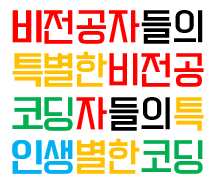

비특코인 최종 학습활동보고서
- 팀 소개
- 목표 및 소개
- 활동 보고서
- 프로그램 종료 후
- 마무리
프로그램 종료 후

프로그램 종료 후 느낀 점 및 고찰
강미규:
신예슬:
이정란:
김예린: 코딩을 할 줄은 모르지만, 데이터나 통계 쪽에 관심을 가지고 있었어서, sql이나 r을 배워보고 싶었다. 먼저 그 기반을 다지자는 생각에 파이썬과 자바를 배워보자고 계획서를 쓰는 단계에서 건의했었다. 또 파이썬이 다른 언어에 비해 직관적이고 쉬운 언어라고 해서 마크업언어인 html을 배우고 난 바로 다음 회차에서부터 파이썬(과 루비)을 공부할 수 있게끔 했었다. 그런데 ‘절차지향 프로그래밍’까지는 그럭저럭 따라갈 수 있었는데, 강의의 중반부터 ‘객체지향 프로그래밍’이 등장하고 그와 관련된 개념임 메소드와 모듈 등의 개념이 나오자 이해가 되지 않기 시작했다. 이해가 될 때까지 바쁜 팀원들을 붙잡고 이건 왜 그렇고 저건 왜 그렇냐며 물어대서, 지금 와 생각하면 조금 미안한 생각이 들기도 한다. 또 내가 할 수 없을 거라 여겼던 간단한 개인 블로그(사이트), 파이썬을 이용한 미니 게임 등을 제작해 본 경험은 앞으로 경험하게 될 많은 경험들 중에서도 특히 값질 것이라고 감히 예상해본다.
김현지:
프롤로그